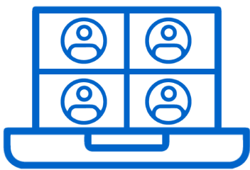

Reuniões corporativas
Board meetings, negociações e apresentações com stakeholders internacionais.
Serviço especializado
Eventos multilíngues totalmente online — conecte participantes de qualquer lugar do mundo com interpretação em tempo real, sem barreiras de idioma.

Comunicação sem fronteiras
A interpretação simultânea remota permite que pessoas de diferentes nacionalidades participem do mesmo evento online, compreendendo tudo em seu idioma — sem deslocamentos, sem cabines físicas e sem perder a fluidez da comunicação.
Ideal para reuniões corporativas, conferências internacionais, treinamentos e eventos híbridos, a ISR transforma qualquer plataforma de videoconferência em um espaço verdadeiramente global.
Como funciona
Um fluxo simples e profissional que conecta vozes, idiomas e participantes em qualquer lugar do planeta.
Locutor
Fala em seu idioma nativo
Áudio pela plataforma
Transmitido via videoconferência
Intérprete remoto
Ouve e traduz em tempo real
Tradução em tempo real
Voz do intérprete na plataforma

Participantes
Escolhem o idioma preferido

Benefícios da ISR
Mais alcance, menos custos e a mesma qualidade de uma interpretação presencial — com a flexibilidade do digital.
Conecte participantes de qualquer país sem barreiras geográficas.
Sem deslocamento de intérpretes, cabines ou equipamentos presenciais.
Intérpretes especializados atuam remotamente com a mesma excelência.
Configuração ágil para eventos com prazos curtos ou demandas urgentes.
Transmissão clara e estável para compreensão perfeita em todos os idiomas.
Integre participantes presenciais e remotos na mesma experiência multilíngue.
Compatibilidade
Operamos nas principais ferramentas de videoconferência utilizadas no mundo corporativo e acadêmico.
Estrutura técnica
Cada elemento contribui para uma experiência fluida e profissional — do áudio à conexão.
Áudio nítido para o intérprete ouvir cada nuance do locutor com precisão.
Transmissão limpa da voz do intérprete para todos os participantes.
Conexão dedicada e redundante para evitar interrupções durante o evento.
Hardware testado e aprovado para interpretação simultânea remota.
Espaço acusticamente tratado para máxima concentração e qualidade sonora.
Aplicações
De reuniões executivas a conferências globais — a interpretação remota se adapta a qualquer contexto multilíngue.
Board meetings, negociações e apresentações com stakeholders internacionais.

Simpósios e congressos com participação de especialistas de diversos países.

Capacitações e workshops com equipes distribuídas globalmente.

Cúpulas, fóruns e assembleias com representantes multilíngues.

Aulas, defesas de tese e eventos acadêmicos internacionais.
Grandes eventos com transmissão simultânea para audiências globais.
Processo
Do primeiro contato ao encerramento — acompanhamento completo em cada etapa do seu evento.
Você nos conta sobre o evento, idiomas necessários e plataforma utilizada.
Definimos intérpretes, idiomas, cronograma e requisitos técnicos.
Testes de áudio, conexão e configuração da plataforma antes do evento.
Interpretação em tempo real com suporte técnico durante toda a transmissão.
Equipe disponível para resolver qualquer imprevisto em tempo real.
Relatório final e feedback para aprimorar futuros eventos.
Dúvidas frequentes
Respostas objetivas sobre interpretação simultânea remota.
É a tradução oral em tempo real realizada por intérpretes remotos, conectados via plataforma de videoconferência. O locutor fala em seu idioma e os participantes escolhem o canal de áudio no idioma desejado — tudo online, sem necessidade de cabines físicas.
Operamos com Zoom, Microsoft Teams, Google Meet, Cisco Webex e GoTo Webinar. Caso utilize outra plataforma, consulte nossa equipe para avaliar a compatibilidade.
Sim. A ISR integra participantes presenciais e remotos na mesma experiência multilíngue, garantindo que todos compreendam o conteúdo em seu idioma, independentemente de onde estejam.
Atendemos mais de 15 idiomas, incluindo português, inglês, espanhol, francês, alemão e línguas indígenas. A combinação depende da disponibilidade de intérpretes especializados no tema do evento.
Solicite um orçamento personalizado e nossa equipe analisará as condições do seu evento para propor a melhor solução de interpretação simultânea online.
Solicitar Orçamento